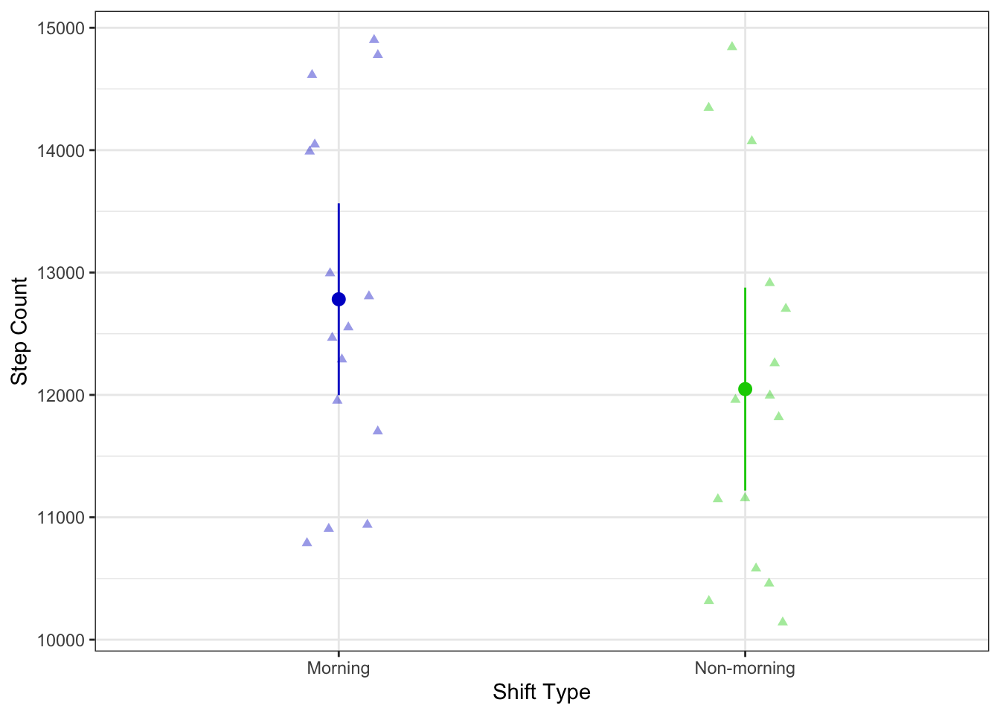

library(tidyverse)
library(here)
library(gt)
library(janitor)
library(readxl)
library(png)
library(knitr)
library(rmarkdown)
steps <- read_xlsx( # creating an object for my data
here("data", "work-steps.xlsx"),
sheet = "Sheet1")Homework 03 Template
Set up
Problem 1. Personal data
a.
I could compare my mean step count at work between a morning shift and a non-morning shift because work is busier during a morning shift, so I think I take more steps during a morning shift.
b.
steps_clean <- steps |> # making clean new object from steps
clean_names() |> # cleaning column names
mutate(opening_shift = case_when( # rename opening_shift column
opening_shift == "Yes" ~ "Morning", # renaming "Yes" to "morning"
opening_shift == "No" ~ "Non-morning")) |> # renaming "No" to "non-morning"
select(opening_shift, number_of_steps) # selecting certain columns
names(steps_clean)[names(steps_clean) == "opening_shift"] <- "Shift" # renaming the "opening_shift" column to "Shift"
t.test( # t-test
number_of_steps ~ Shift, # formula: response variable ~ grouping variable
var.equal = TRUE, # argument for equal/unequal variances
data = steps_clean) # using steps_clean data frame
Two Sample t-test
data: number_of_steps by Shift
t = 1.3796, df = 28, p-value = 0.1786
alternative hypothesis: true difference in means between group Morning and group Non-morning is not equal to 0
95 percent confidence interval:
-355.8275 1823.9608
sample estimates:
mean in group Morning mean in group Non-morning
12781.60 12047.53 steps_ci <- steps_clean |> # making new steps_ci object from steps_clean
group_by(Shift) |> # grouping by "opening shift"
summarize(ci = mean_cl_normal(number_of_steps)) # calculating the 95% CI
ggplot(data = steps_clean, # using steps_clean data frame
aes(x = Shift, # x-axis
y = number_of_steps, # y-axis
color = Shift)) + # coloring points by opening_shift
geom_jitter(height = 0, # no jitter in the vertical direction
width = 0.1, # smaller jitter in the horizontal direction
alpha = 0.4, # making the points more transparent
shape = 17) + # making the points triangles
geom_pointrange(data = steps_ci, # using the steps_ci data frame
aes(x = Shift, # x-axis
y = ci$y, # y-axis
ymax = ci$ymax, # upper bound of confidence interval
ymin = ci$ymin)) + # lower bound of confidence interval
labs(x = "Shift Type", # labeling x-axis
y = "Step Count") + # labeling y-axis
scale_color_manual(values = c("Morning" = "blue3", # coloring "Morning" blue
"Non-morning" = "green3")) + # coloring "Non-morning" green
theme_bw() + # using a theme
theme(legend.position = "none") # removing legend
c.
Comparing step counts between morning shifts and non-morning shifts. The mean step counts of morning shifts (12,785) is higher than the mean step count of non-morning shifts (12,054).
d.
steps_summary <- steps_clean |> # make new object from "steps_clean"
group_by(Shift) |> # group by shift
summarize(mean = mean(number_of_steps), # calculate the mean
ci = mean_cl_normal(number_of_steps)) |> # calculate the 95% CI
mutate(mean = round(mean, 1), # round mean to one decimal
ci = round(ci, 1)) |> # round the CI to one decimal
gt() # make a gt table
gt_tbl <- steps_summary |> # use the "step_summary" data frame
tab_header(title = "Steps Summary") # make a table header
gt_tbl| Steps Summary | ||
|---|---|---|
| Shift | mean | ci |
| Morning | 12781.6 | c(12781.6, 12047.5) |
| Non-morning | 12047.5 | c(11997.6, 11218.3) |
Problem 2: Affective visualization
a.
An affective visualization for my personal data would divide the paper in two with a line and each side would include dashed lines to represent my steps walked. I would color code the dashed lines to compare the type of shift. For my morning shift data I would use orange and red to visualize the sunrise. Then for my non-morning shift data I would use blue and purple to visualize the afternoon and night. I would also show the difference in how many steps I take by increasing the density of dashed lines for morning shifts than non morning shifts.
b.
c.
d.
My piece is a drawing which shows the difference in my steps at work between morning shifts and non-morning shifts which I color coded based on type of shift. I found Lorraine Woodruff-Long’s warming strip quilt piece inspiring for my draft by using contrasting colors to differentiate groups and I had the idea to use dashed lines to represent steps walked.
Problem 3. Statistical critique
a.
The authors are using a generalized linear mixed model within a Bayesian framework to predict the probability of coral bleaching by environmental variables such as temperature metrics, latitude, depth, and coral diversity. The response variable is the percentage of coral colonies bleached and the predictor variables are temperature metrics such as sea surface temperature (SST) and degree heating weeks (DHW), and the other abiotic variables are latitude, depth (m), and coral diversity. The red dots show a positive contribution to bleaching likelihood, blue dots show a negative contribution to bleaching likelihood, and white dots show no significant contribution to bleaching likelihood.
b.
The authors did a good job visually representing their statistics in figures because their x- and y-axes are in logical positions, depicting the relationship between the percentage of coral colonies bleached across all predictor variables. Their figure also includes the means of all variables (circles) and their 95% confidence intervals (thin black lines). Their figure also organizes which variables have a positive, negative, or no significant contribution to bleaching likelihoods in a linear fashion.
c.
I think the authors had a decent data:ink ratio since their figure is clear but also include unnecessary tick marks and grid lines. However, the important data still stands out in their figure since they effectively color coded the means of each variable, categorizing them by level of likelihood to contribute to coral bleaching. It is also easy to see the 95% confidence interval of each variable.
d.
To make the figure look better I recommend removing the tick marks on the y-axis and the grid lines in the graph since both of these do not contribute to important data and the figure would look cleaner. I would also remove the 50% confidence intervals since these do not matter that much especially since the authors already included the 95% confidence intervals. This would also make the important data stand out more such as the means and 95% confidence intervals. However, I would not add anything extra to the figure since they already included the necessary data to address their goal.